COULD I WATER MY PLANTS ANYWHERE AT HOME?
식물이 매일매일 조금씩 달라지는 모습을 보는 것은 즐겁습니다. 때론 무심해지기도 하지만 바람에 흔들리고 햇빛을 맞는 모습을 보거나 물을 주면서 잘 자라기를 바라는 마음을 갖는 순간은 평화롭고 건강한 느낌이 듭니다. 한편 집에서 물을 주는 공간은 제한적입니다. 물론 물이 넘치는 것을 방지하기 위해서 물받이 받침대가 있긴 하지만 시원치 않습니다. 어디서든 물을 시원하게 줄 수 있다면, 심지어 아침에 일어나 바로 옆의 화분에 호스를 키고 물을 줄 수
있다면 상쾌하지 않을까요?
COULD THERE BE A FUNCTIONAL HOUSE WITH A SIZE OF A BED?
하루종일 트위터를 하는 삶을 상상합니다. 누워서 핸드폰으로 세상을 봅니다. 화장실을 가거나 음식을 만들어 먹기 위해 최소한으로 움직입니다. 내가 움직이는 것이 아니라 침대가 움직입니다. 침대는 수직으로 움직이며 4면의 벽에 온갖 가구와 설비가 설치되어 있습니다. 하루종일 침대에서 뒹굴대며 어떤 간섭 없이 핸드폰을 할 수 있습니다.
IS IT POSSIBLE TO CONSIDER MICRO ECOSYSTEM WHILE MAKING ARCHITECTURE?
폭력과 파괴에 대해 생각합니다. 폭력은 의도성이 있다고 합니다. 한편 건물을 지을 때 필연적으로 기존의 땅을 파괴하게 됩니다. 폭력을 의도하진 않지만 땅을 파괴하는 행위는 거의 필연적으로 생기게 됩니다. 우리는 이 파괴와 “영향”을 최소화하고자 하지만 대부분은 묵인하고 방관합니다. 한편 비버와 까치가 짓는 집 역시 기존 환경에 어떤 영향을 미칩니다. 그러나 우리는 그것이 파괴적이라고 생각하진 않습니다. 우리가 묵인하고 방관하는 파괴는 결국 폭력이
아닐까 생각합니다. 정녕 파괴적인, 폭력적인 건축은 피할 수 없는 것 일까요?
HOW DO I COEXIST WITH WILD ANIMALS AT HOME?
in progress
I WANT A HOUSE WHERE FURNITURES HAVE NO LEGS
"가구가 다 떠있는 집을 원해요." 청소기로 청소를 하다보면 침대 속, 책상의 다리, 의자의 다리 때문에 청소하기가 불편하다고 생각했었습니다. 한편 모든 가구가 천장에 매달려있으면서도 움직이거나 고정이 가능하다면 좀 더 색다른 집이 나오지 않을까? 생각했습니다. 새끼발까락을 가구 모서리에 자주 찧었던 경험을 기억하기도 하고, 강아지나 고양이가 가구 아래로 마음껏 뛰어다니는 모습을 상상하면서 떠있는 가구의 집을 디자인 했습니다.
WHEN I WAKE UP, THE FIRST THING I DO IS CHECKING MY PLANTS IN MY 'GREENROOM'
in progress
WHEN I GET OUT OF BED, I WANT TO FEEL SOFTNESS OF GRASS
in progress
HOME SWEET HOME; WHAT IS A GOOD HOUSE?WHAT IS A GOOD LIFE?
in progress
 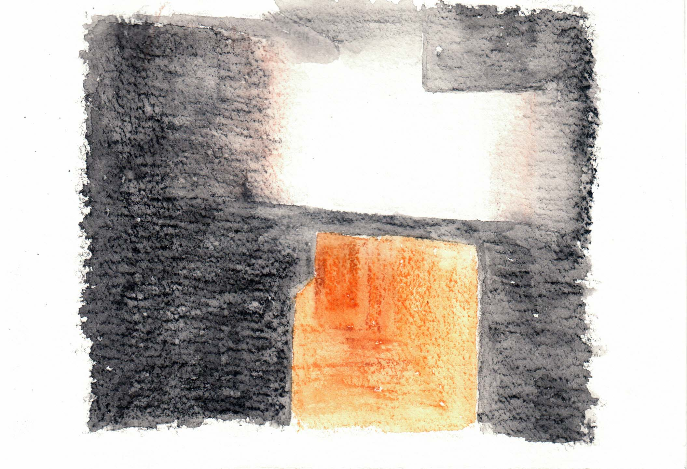
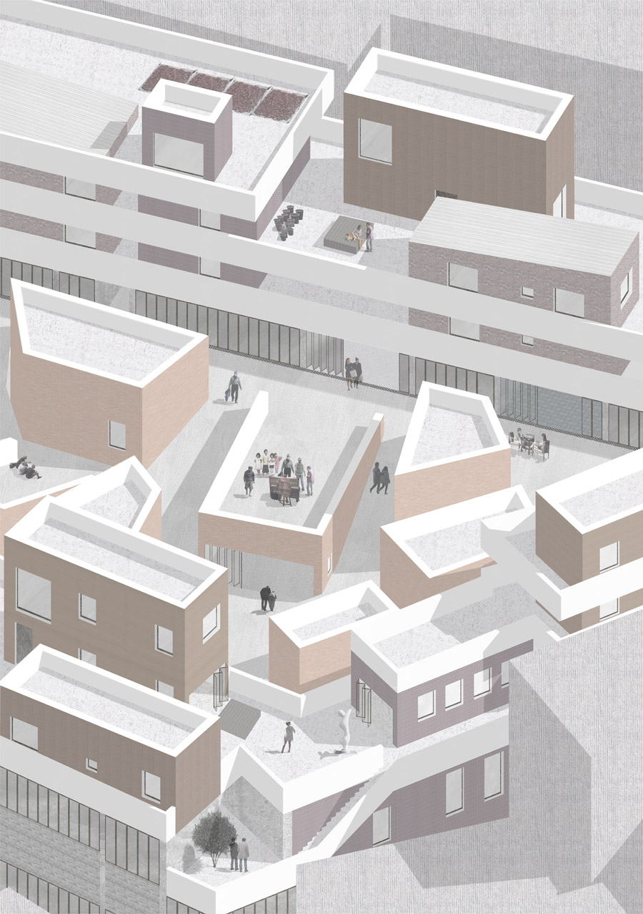
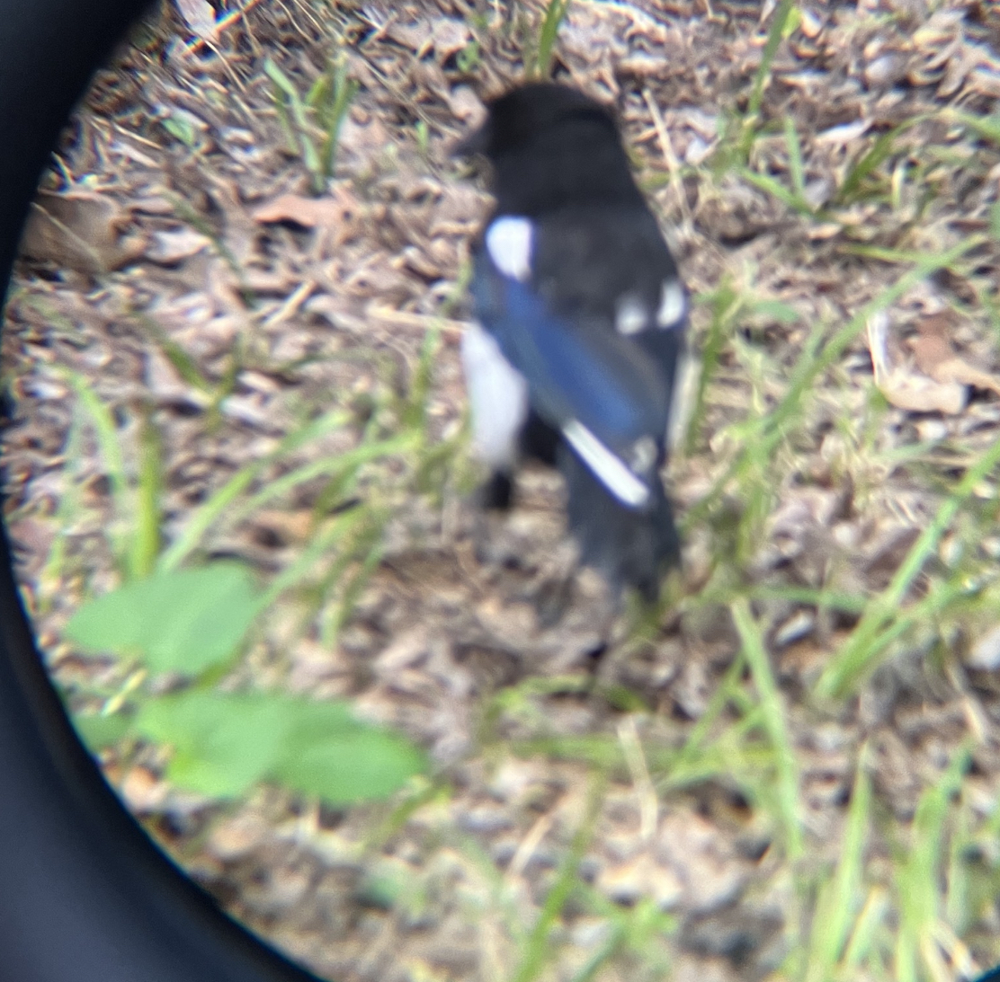
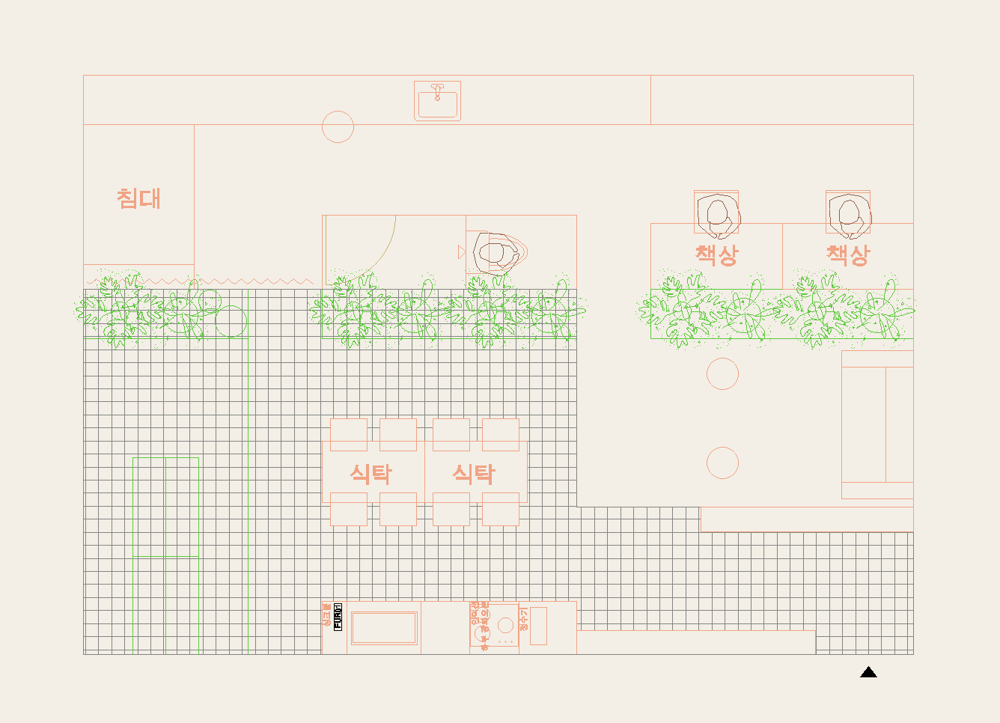
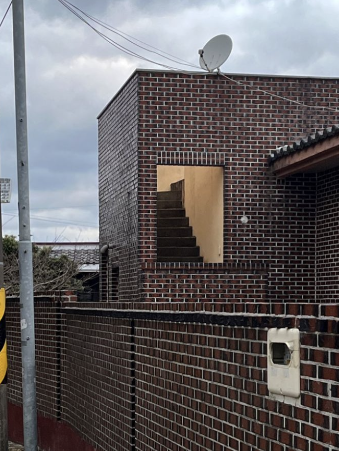
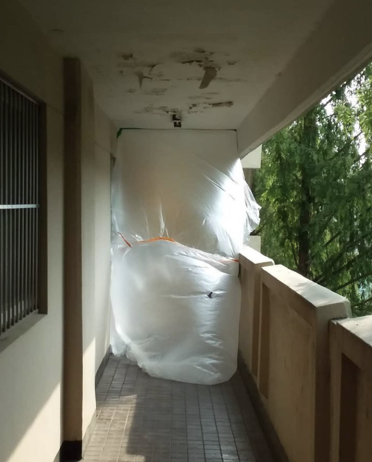
×
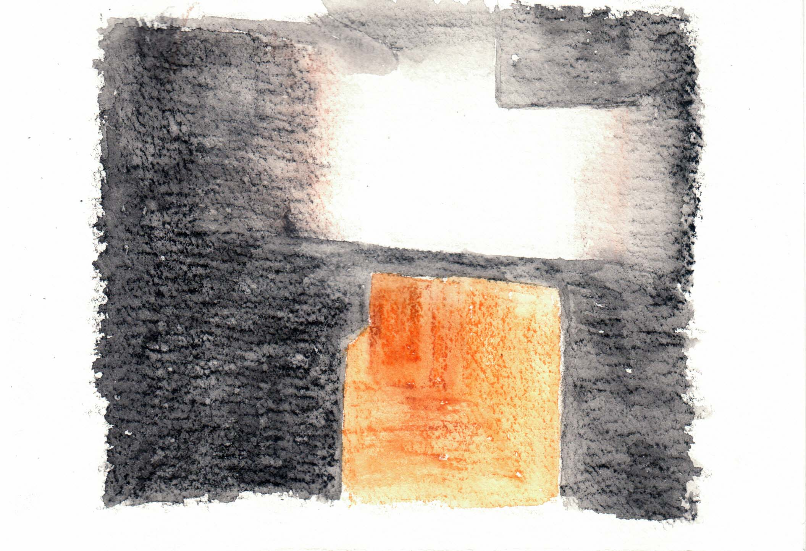
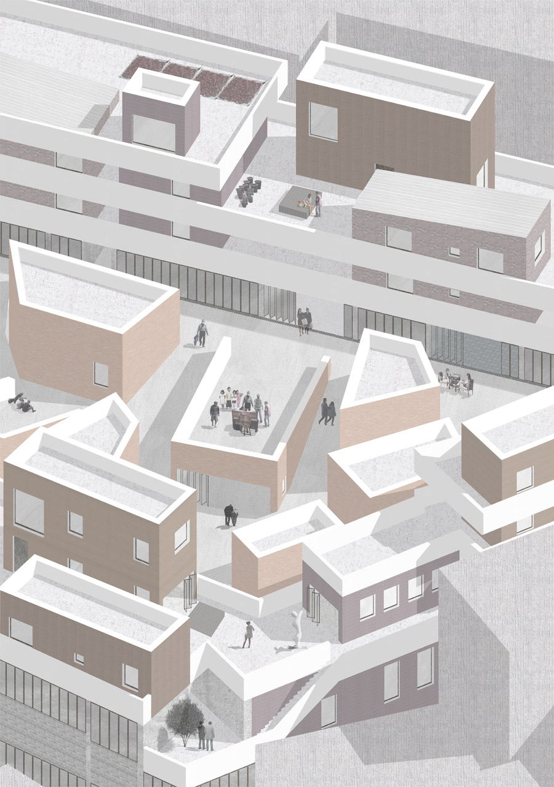
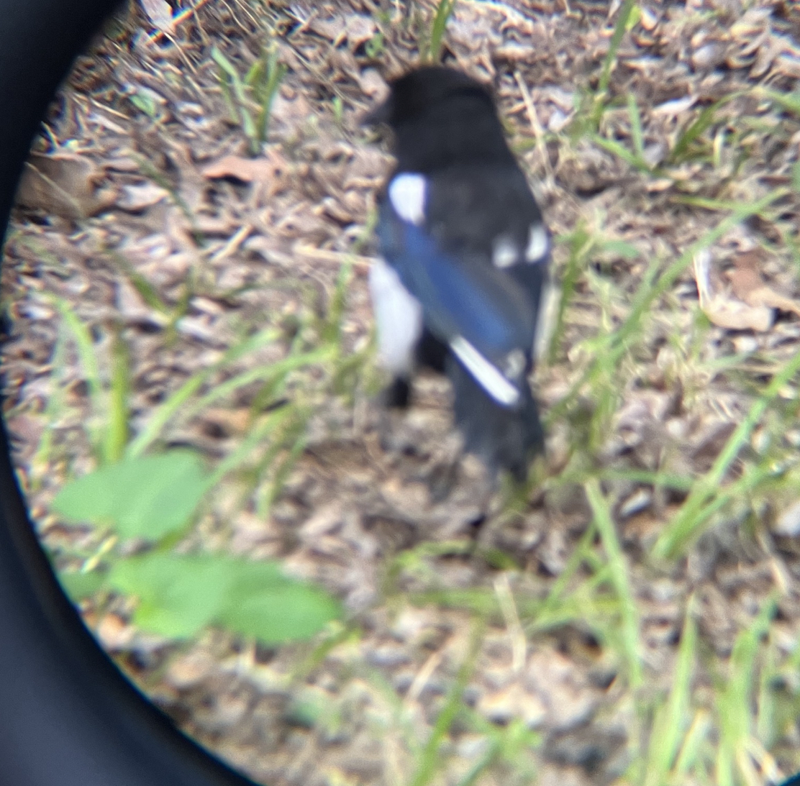
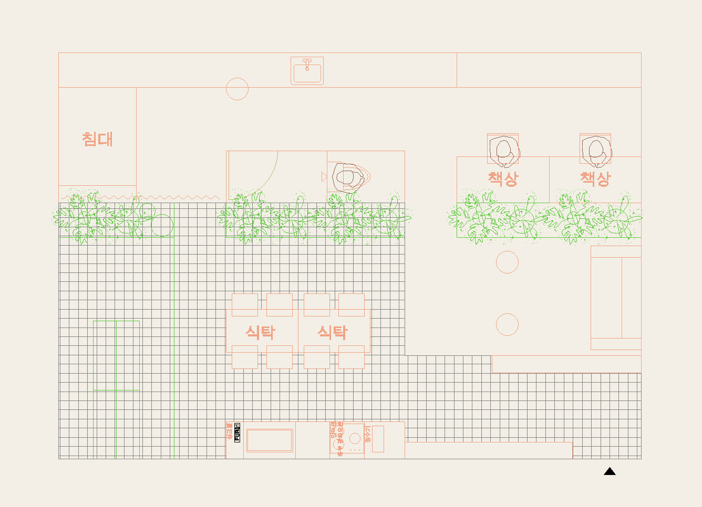
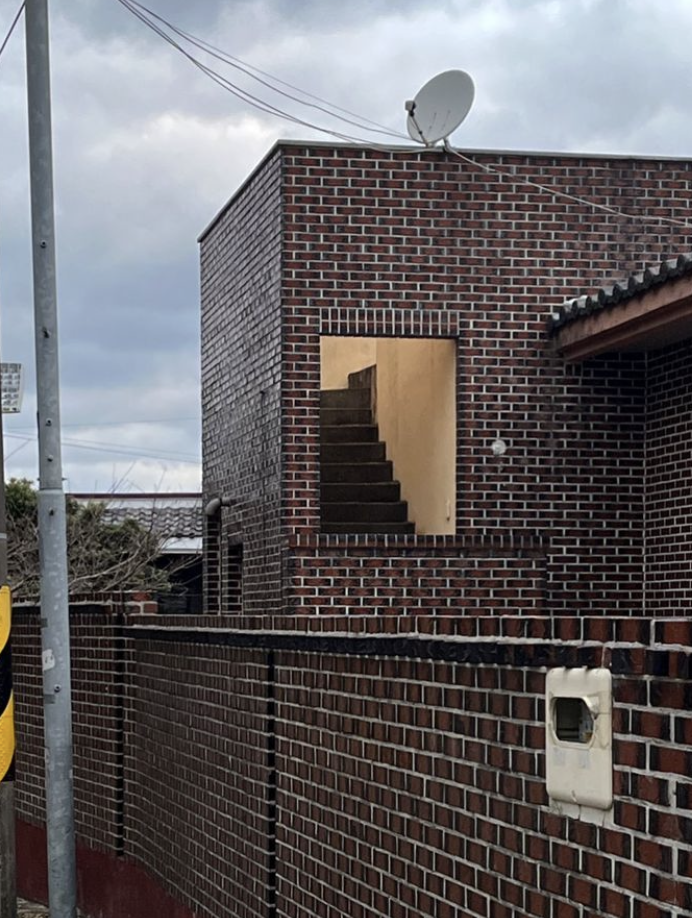
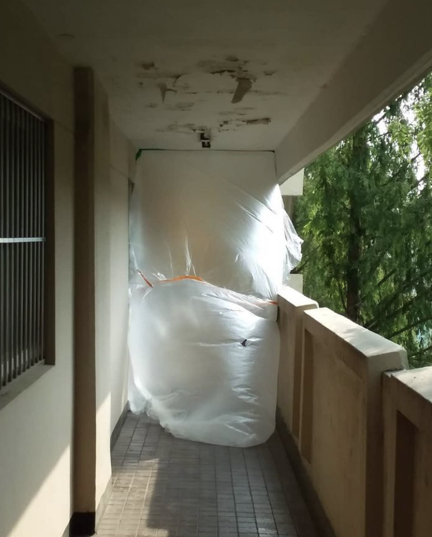
×
adadsadad
×